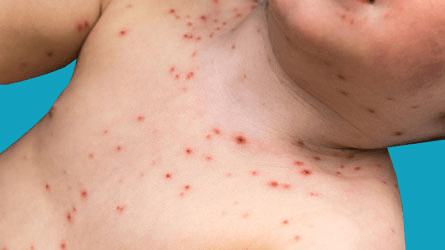
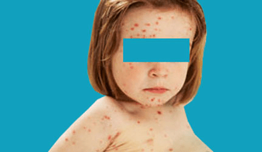

Chickenpox, also called varicella, is characterized by itchy red blisters that appear all over the body.
A virus causes this condition. It often affects children, and was so common it was considered a
childhood rite of passage.
It's very rare to have the chickenpox infection more than once. And since the chickenpox vaccine
was introduced in the mid-1990s, cases have declined.


Use paracetamol if you or your child have a high temperature (fever) and feel uncomfortable.
Paracetamol is safe for most people to take,including pregnant women and children over
two months of age. Special liquid versions are available for young children and babies.
Don't use anti-inflammatory painkillers, such as ibuprofen, as they can sometimes make
people with chickenpox very ill. Never give aspirin to a child under 16 as it can be dangerous for them.
Always read the packet or leaflet that comes with the medicine to check if it's suitable and
how much to take. Speak to a pharmacist or your GP if you're unsure.
Chickenpox can be very itchy, but it's important not to scratch the spots
as it can increase the chances of the skin becoming infected with bacteria
and could result in scarring.
It can help to:
It's important to drink plenty of fluids to avoid dehydration.
Water is better than sugary, fizzy or acidic drinks, particularly if
you or your child has chickenpox spots in the mouth.
Sugar-free ice lollies are also a good way of getting fluids into children
and can help soothe a sore mouth.
Avoid sharp, hard, salty or spicy foods that may make the mouth sore. Soft,
cool foods are best, such as soup that has been left to cool down.
If you breastfeed or bottle feed your baby, continue to give them feeds regularly.
Antiviral medication or a treatment called immunoglobulin may be recommended
if you're at risk of developing severe chickenpox.
Those at risk include:
An antiviral medicine called aciclovir may be recommended if you're at risk
of severe chickenpox and you already have symptoms.
It ideally needs to be started within 24 hours of the rash appearing. It doesn't
cure chickenpox, but makes the symptoms less severe.
It's normally taken as tablets five times a day for seven days.
Immunoglobulin is a treatment given by injection that can help prevent severe
chickenpox if you've been exposed to someone with the infection but don't have
any symptoms yet.
It's sometimes given to pregnant women, people with a weakened immune system
and newborn babies who've been exposed to the chickenpox virus and haven't
had the infection before.